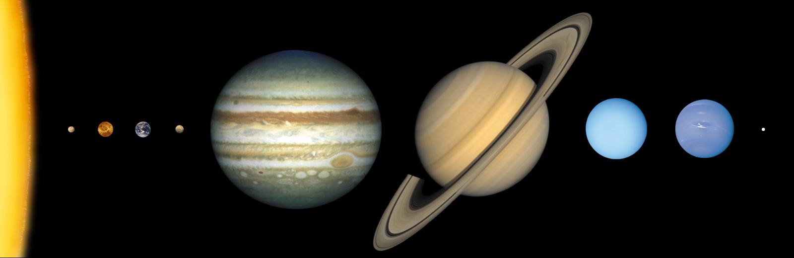
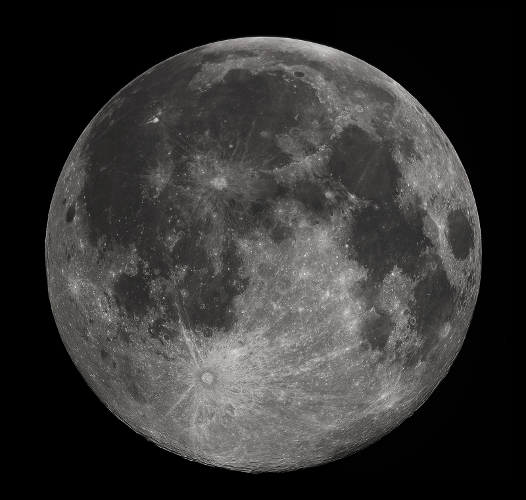

This is a compendium of knowledge, illustrations and imagery, of the entire Universe, on the fields of cosmology, astronomy and the technology used to carry out the studies on these fields. This compendium of information has been designed to give critical information on the most important aspects of the universe and the technology used in a concise and straightforward manner. The authors of the compendium welcomes you to... The Universe on the Web.
The Solar System
The planets to scale. The rings of the gas giants are not shown. (Distance between objects not to scale)The geocentric model.
For thousands of years ancient astronomers saw points of light that appeared to move among the stars. They called these ‘planets’, meaning ‘wanderers’, and named them after the Roman gods. If you look up at a clear night sky, you too will be able to see many of the planets that the ancient astronomers saw. You might also see an assortment of space junk and satellites that also move in the night sky.
Theories of the solar system
Pythagoras, a Greek scientist who lived in the sixth century BC suggested that the Earth was the centre of the universe.
Aristotle (384–322 BC), Hipparchus (died after 127 BC) and Ptolemy (127–145 AD) proposed more detailed models in which Earth was placed at the centre of the solar system.
This type of model is known as the Geocentric (geo-earth) or the Ptolemy model.
Another ancient Greek, Aristarchus (310–230 BC) questioned the geocentric model and proposed a model where the Earth and other planets revolved around the Sun. This is known as a Heliocentric model. (Helio, i.e. Sun)
The geocentric model continued to be favoured until the end of the fifteenth century
In the 1530s, Polish astronomer Nicolas Copernicus (1473–1543) agreed with Aristarchus
Galileo (1564–1642) was a strong supporter of Copernicus’s ideas, and in 1609 he used a telescope for the first time to make detailed observations of the Moon and planets; his observations exposed errors in the geocentric model
Tycho Brahe (1546–1601) didn’t support the heliocentric theory and took numerous detailed measurements of the positions of stars and planets in an attempt to improve the geocentric model
His assistant, German astronomer Johannes Kepler (1571–1630) finally showed the heliocentric model was correct using Tycho Brahe's data. His observations and findings are now called Kepler's Laws of Planetary Motion.
Sir Isaac Newton (1643-1747), famous for "discovering gravity", published his Philosophiæ Naturalis Principia Mathematica ("the Principia") and along with it, Newton's laws of universal gravitation which expanded upon Kepler's laws and provided the possibility for more thorough mathematical analysis. His laws of gravitation, stated as "any two bodies in the universe attract each other with a force that is directly proportional to the product of their masses and inversely proportional to the square of the distance between them," was finally confirmed by the famous Cavendish experiement 111 years after the publication of the Principia.
Albert Einstein (1879-1955), in a set of phenomenal papers in 1905 while he was working as a patent clerk, proved among other things, the theory of special relativity and the mass-energy equivalence. The first had proven that time passes slower relatively to other objects when the objects are moving relatively, and that it was the solution for the mystery of the orbit of Mercury. Special relativity, along with the mass-energy equivalence, also opened up the theoretical possibility of black holes.
The heliocentric model.
The solar system
The term ‘solar system’ takes its name from the object at the centre of it all—the Sun, also known as Sol.
The nine planets of the solar system, in order starting from closest to the Sun, are: Mercury, Venus, Earth, Mars, Jupiter, Saturn, Uranus, Neptune and Pluto (now known as a dwarf planet).
A mnemonic device to remember the order could be: My Very Elegant Mother Just Served Us Nine Pizzas
The planets each orbit the Sun, rotating on their axes as they do so.
The time taken for a planet to spin once on its axis is called its day, and the time taken to orbit the Sun once is called its year.
All the planets have days and years of different lengths.
How the planets move:
The gravitational attraction between the sun and a planet acts as a centripetal force to cause the planet to orbit in a circular pattern.
The inverse-square law allows the possibility of elliptical orbits, e.g. the orbit of Eris. The amount of difference from a circular orbit can be quantified by the orbit's ellipticity.
The four innermost planets are called terrestrial (meaning ‘Earth-like’) and orbit the Sun in almost circular orbits
The larger outer planets — Jupiter, Saturn, Uranus and Neptune—are known as the gas giants (or Jovian planets), because their outer layers are composed of gases such as hydrogen and helium, and they move in elliptical or oval orbits
All planets move in the same plane (a large imaginary flat surface) except for Pluto, whose orbit is tilted by about 17° compared to the other planets’ orbits
THE SOLAR SYSTEM
(press keyboard arrow keys)
Sun
Mythology
The Sun God. Greeks Called it Hellos.
Mass
333 400 times the mass of the Earth
Diameter
1 392 000 km (109x Earth’s diameter)
Gravity
28 times that on Earth
Surface Temperature
6000°C (average). From 4500°C to 2000000°C up to 15000000°C in the core.
Equator
26 Earth days, poles 37 Earth days
Tilt of axis
122°
Why is the Sun so hot?
At the start of the Sun's life, a large gas cloud – consisting primarily of hydrogen and helium – started collapsing down into a single, dense ball of plasma.
The gravitational potential energy, now converting into kinetic energy as the gas particles fall, become very hot as that kinetic energy is converted into heat energy by processes such as friction.
The centre of the "ball of plasma" continues to increase in pressure and temperature.
After the centre of the newly born star reaches a certain temperature and pressure, nuclear fusion of hydrogen nuclei into helium nuclei begins.
As the nuclear fusion of hydrogen into helium is an exothermic process, the core generates heat and supplies an outward pressure of its own, causing the star to expand and thereby raising the rate of heat loss from radiation of light.
The star now stays in a state of dynamic equilibrium, where excessive heat production causes the star to expand and raise the rate of heat loss; and excessive heat loss causes the star to contract, increasing the temperature and pressure at its core, thereby increasing the rate of heat generation from nuclear fusion.
The lifecycle of a nuclear-powered star.
Stars
Mercury
Mythology
God of travel, commerce and thieves.
Mass
0.056 times that of Earth
Moons
None
Diameter
4878 km (0.38x Earth’s diameter)
Surface
Similar to Earth’s moon
Gravity
0.38 times that on Earth
Surface Temperature
-170°C to 430°C
Period of rotation
59 Earth days
Tilt of axis
0°
Distance from Sun
0.39 AU (58 million kilometres)
Time to orbit Sun
88 Earth days
Key points
Mercury is the closest planet to the Sun, and is a relatively small planet.
Its proximity to the sun has allowed the Sun's spray of plasma particles and solar flares to "shave off" its atmosphere contents.
A lack of an atmosphere implies low heat capacity. The side of the surface in shade cools down to a freezing -170°C, while the side where the Sun's rays reaches is heated to a blazing 430°C.
Its surface texture is similar to Earth's Moon.
Venus
Mythology
Goddess of love and beauty.
Mass
0.815 times that of Earth
Moons
None
Diameter
12 103 km (0.95x Earth’s diameter)
Surface
Extensive cratering, volcanic activity.
Gravity
0.9 times that on Earth
Surface Temperature
460°C
Period of rotation
243 Earth days
Tilt of axis
30°
Distance from Sun
0.72 AU (108 million kilometres)
Time to orbit Sun
225 Earth days
Key points
Venus has the hottest surface temperature of all planets, exceeding that of Mercury's. The cause of this is likely that a runaway greenhouse effect has taken place – letting the atmosphere heat up while heat loss is limited.
Venus is similar in size to Earth, with similar surface gravity as well.
Earth
The Blue Marble is a famous photograph of the Earth, taken on December 7th, 1972, by the crew of the Apollo 17 spacecraft at a distance of about 45,000 kilometers. It is one of the most iconic, and among the most widely distributed images in human history.
Mythology
Gaia — Mother Earth
Mass
1.0 times that of Earth (5 980 000 000 000 000 000 000 000 kg)
Moons
One (‘the Moon’)
Diameter
12 756 km
Surface
Two-thirds water, one-third land
Gravity
1.0 times that on Earth
Surface Temperature
average 22°C
Period of rotation
1 Earth day
Tilt of axis
23.5°
Distance from Sun
1 AU (150 million kilometres)
Time for light to reach Earth
8 minutes
Time to orbit Sun
365.25 Earth days
Earth’s movement in space
The ancient civilisations defined the days, seasons, months and years by following the movements of the Sun and Moon. Babylonians, Mayans, indigenous Australians and many other cultures all developed complex ways to predict seasonal changes. This enabled people to plan when to plant crops or move to a new location in search of seasonal foods. Survival depended on this ancient scientific knowledge of the Earth’s movement in space.
The earth spins on its axis, causing alternating day and night
When Earth is in the position shown, days are shorter in the southern hemisphere and longer in the northern hemisphere.
Earth’s movement in space: one year
The time taken by a planet to orbit (travel around) the Sun is called a year.
Earth spins on its axis while it orbits the Sun.
The Earth spins once on its axis in a day, and takes a year to orbit the Sun.
Earth’s movement in space: seasons
As the Earth orbits the Sun, the tilt causes different parts of the Earth to experience different heating effects
At the summer solstice, days are longest, and at the winter solstice, days are shortest.
Between these two times, at the two equinoxes, day and night are of equal length.
Bengali seasons:
Summer.
Rainy/Monsoon.
Autumn. (storm season)
Late Autumn. (cooler but still humid season)
Winter. (cold weather season)
Spring. (hot dry weather)
The Moon
A full moon, as seen from Earth's northern hemisphere.
Mythology
God of the night
Mass
0.012 times that of Earth
Diameter
3476 km (0.27x Earth’s diameter)
Gravity
0.16 times that on Earth
Surface Temperature
-230°C to 123°C
Period of rotation
27.3 days
Tilt of axis
5°
Distance from Earth
384,403 kilometres
Time to orbit Earth
29.5 days
Time to reach Moon
3 days
Date first visited
July 20, 1969
We choose to go to the moon. We choose to go to the moon in this decade and do the other things, not because they are easy, but because they are hard, because that goal will serve to organize and measure the best of our energies and skills, because that challenge is one that we are willing to accept, one we are unwilling to postpone, and one which we intend to win, and the others, too.
— John F. Kennedy. September 12th, 1962.
What does the Moon do?
The Moon has a great impact on life on Earth.
It changes appearance over the course of one Earth month.
It is responsible for the tides.
It is involved in solar and lunar eclipses.
Notice that the time for the Moon to orbit the Earth is nearly the same as the time it takes to spin once on its axis — this results in us only ever seeing the one side of the Moon from Earth. The other side is often called ‘the dark side of the Moon’ since it had never been seen before it was photographed by the Soviet Union's Luna 3 space probe.
Phases of the Moon
The Moon takes about a month to orbit the Earth, and spins at a similar rate, and therefore we always see the same face of the Moon. How much of the Moon’s face we see depends on where it is in its orbit around the Earth. We call these different views phases.
Imagine yourself on the Earth, under point A looking towards Moon A . Because the Sun is directly behind the Moon, you see nothing of the Moon. Now imagine yourself on Earth under point C, looking directly towards Moon C. From here you would see only half the Moon.
The Moon and the tides
As early as the second century BC, the Chinese had recognised a connection between tides and the Moon’s cycle. About twice a day the sea level rises to a high tide and falls to a low tide—the average time between two high tides is 12 hours 25 minutes. It was not until Newton proposed a theory of gravity in 1687 that tides were understood to be the result of the Moon’s gravitational pull on the Earth.
The gravitational force between two objects is only noticeable when one or both objects are very large, as is the case with the Moon and the Earth. The Moon attracts the oceans towards it, enough to cause a bulge in the oceans facing the Moon. If this were the only effect there would only be one high tide and one low tide a day, not two. The Earth’s rotation, however, causes a similar bulge on the other side of the Earth.
Solar eclipse
The word ‘eclipse’ comes from the Greek word for ‘abandonment’ — the eclipse was seen as the Sun abandoning the Earth. There are three types of solar eclipses.
A diagram of how how shadows are projected.
Total solar eclipse is when the Sun is covered by the Moon.
Annular solar eclipse occurs when the Moon is at its greatest distance from the Earth.
Partial solar eclipse is when the Moon covers only part of the Sun.
All solar eclipses occur when the Moon comes between the Earth and the Sun and the Moon’s shadow falls on the Earth.
Lunar eclipse
A lunar eclipse occurs whenever the Moon passes through some portion of the Earth's shadow. This can occur only when the Sun, Earth, and Moon are aligned exactly, or very closely so, with the Earth in the middle. Hence, the Moon is always full during a lunar eclipse. A lunar eclipse occurs at least two times a year, whenever some portion of the Earth's shadow falls upon the Moon.
The Moon does not completely disappear as it passes through the umbra because of the refraction of sunlight by the Earth's atmosphere into the shadow cone; if the Earth had no atmosphere, the Moon would be completely dark during an eclipse. The red colouring arises because sunlight reaching the Moon must pass through a long and dense layer of the Earth's atmosphere, where it is scattered.
Mars
A picture of Mars, "The Red Planet." A blue aurora can be seen at its north pole; caused by collision of solar or charged particles with the atmosphere's air molecules. It is observed only at the poles as the charged particles are deflected and "guided" by the planet's magnetic field lines towards and into the poles.
Mythology
God of war
Mass
0.107 times that of Earth
Moons
2 (Phobos—diameter 23 km, Deimos—diameter 10 km)
Diameter
6794 km (0.53x Earth’s diameter)
Surface
Soft red soil containing iron oxide (rust). Cratered regions, large volcanoes, a large canyon and possible dried-up water channels.
Gravity
0.376 times that on Earth
Surface Temperature
-120°C to 25°C
Period of rotation
1.03 Earth days
Tilt of axis
25.2°
Distance from Sun
1.52 AU (228 million kilometres)
Time to orbit Sun
687 Earth days
Time to reach Mars
9 months
Mars is the fourth planet of our solar system. It is one of the most interesting extraterrestrial planets despite its barren nature, as it is thought that it may have been possible for it to have harboured alien life. It has a reduced magnetic field, thought to be because its core made of iron (which produces the magnetic field) has cooled down too much to generate a stronger magnetic field. The result has been that solar particles and solar flares have depleted the atmosphere to some extent. It has also been bombarded by meteorites, as shown by the numerous meteorite craters. A number of satellites, rovers and probes have been sent to the planet:
An illustration of the Mars rover, Curiosity, equipped with the Mars Science Laboratory. Its size is roughly equivalent to a small SUV.
Viking 1 & Viking 2.
Mars Pathfinder.
MAVEN.
Spirit & Oppurtunity: Two nearly identical rovers were sent to Mars. These were the longest running rovers on an extra-terrestrial planet.
Curiosity: The Mars Science Laboratory and its rover centerpiece, Curiosity, is one of the most ambitious rover probes sent. The primary mission set for the mission is to find out if Mars is, or was, suitable for life. Another objective is to learn more about the red planet's environment. It has a large size – roughly equal to a small SUV – which allows it to host numerous equipment, including cameras, a robotic arm and other tools to analyse rock and ore. It is powered by a radioisotope thermoelectric generator, which works by exploiting the heat from the radioactive decay of Plutonium-238.
Jupiter
A picture of Jupiter. The hue of the surface is seen as varying with longtitude, and with low magnification, the details of the surface can be lost. The large round storm near the bottom-left of the planet is the "Big Red Dot."
Mythology
Ruler of the Gods
Mass
318 times that of Earth
Moons
At least 28 moons and four rings, including the four largest moons: Io, Ganymede, Europa and Callisto. These are known as the ‘Galilean’ moons.
Diameter
142 984 km (11.21x Earth’s diameter)
Surface
Liquid hydrogen
Gravity
2.525 times that on Earth
Surface Temperature
Cloud top –150°C
Period of rotation
9 hours 55 minutes
Tilt of axis
3.1°
Distance from Sun
5.2 AU (778 million kilometres)
Time to orbit Sun
11.8 Earth years
Key points
Jupiter is a gas giant composed mostly of hydrogen, and it is the largest and most heaviest planet of our solar system.
Its density is very low, since it is a gas giant.
It has rings similar to Saturn, however they are not easily visible.
Notable characteristics
Its surface is seen as many bands of gas with different hues.
It has a never-ending storm on its surface, called the "Big Red Dot". Due to Jupiter's size, its diameter is larger than the entire diametre of the Earth.
Saturn
A photograph of Saturn, captured by the Cassini Orbiter on January 19th, 2007.
Mythology
God of agriculture
Mass
95.184 times that of Earth
Moons
At least 30 moons and rings in seven bands
Diameter
120 536 km (9.45x Earth’s diameter)
Surface
Gaseous hydrogen
Gravity
1.064 times that on Earth
Surface Temperature
-180°C
Period of rotation
10 hours 39 minutes
Tilt of axis
26.7°
Distance from Sun
9.6 AU (1400 million kilometres)
Time to orbit Sun
29.5 Earth years
Key points
Saturn is the second largest and second most-massive planet of our solar system.
Its most striking feature – its ring – has been observed for centuries.
Its surface is mostly bland and featureless.
It has a number of large moons and many other smaller ones, similar to Jupiter.
Saturn's ring
The rings are categorised based on their orbit radius and other details.
The rings are composed mostly of small ice and dust particles.
Uranus
A photograph of Neptune, captured by the Voyager 2 spacecraft on December 18th, 1986.
Mythology
Father of Saturn
Mass
14.54 times that of Earth
Moons
At least 21 moons and 11 rings
Diameter
51 200 km (4.01x Earth’s diameter)
Surface
Likely to be frozen hydrogen and helium
Gravity
0.903 times that on Earth
Surface Temperature
-220°C
Period of rotation
17 hours 14 minutes
Tilt of axis
98°
Distance from Sun
19.2 AU (2875 million kilometres)
Time to orbit Sun
84 Earth years
Key points
Uranus is one of the four gas giants in our solar system.
It also has rings; however they are not as prominent as Saturn's rings. It's composed mostly of ice particles.
Neptune
Mythology
God of the sea
Mass
17.15 times that of Earth
Moons
8 moons and 5 rings
Diameter
49 528 km (3.88x Earth’s diameter)
Surface
Frozen hydrogen and helium
Gravity
1.135 times that on Earth
Surface Temperature
-220°C
Period of rotation
16 hours 7 minutes
Tilt of axis
29.3°
Distance from Sun
30.1 AU (4500 million kilometres)
Time to orbit Sun
165 Earth years
Pluto (dwarf planet)
Mythology
God of the underworld
Mass
(1.305 ± 0.007) × 1022 kg 0.0022 Earths 0.178 Moons
Moons
1 (Charon)
Diameter
2300 km (0.18x Earth’s diameter)
Surface
Icy crust of methane
Gravity
0.061 times that on Earth
Surface Temperature
-223°C
Period of rotation
6 Earth days
Tilt of axis
122°
Distance from Sun
39.6 AU (5914 million kilometres)
Time to orbit Sun
249 Earth years
An illustration of New Horizons, the first spacecraft to reach Pluto.
In July 2015, ten years after launching, the New Horizons spacecraft captured the first up-close imagery of Pluto, its moons and will continue to also record findings from a region of the outer solar system called the Kuiper Belt. So far, only the New Horizons spacecraft has reached Pluto.
Eris (dwarf planet)
Eris (centre) and Dysnomia (lower-left).
Mythology
Greek goddess of strife
Mass
(1.67 ± 0.02) × 1022 kg 0.0028 Earths 0.23 Moons
Moons
1 (Dysnomia)
Diameter
2600 km (± 400 km) Surface
Gravity
Surface Temperature
−243 and −217 degrees Celsius
Period of rotation
Possibly 8 hours
Distance from Sun
37.78 AU to 97.56 AU
Time to orbit Sun
556.7 Earth years
Discovered January 5, 2005, from images taken on October 21, 2003.
Comparing tilt of axis
Technology
For millenia, technology has been critical for the observation of the stars and planets. This includes the invention of the astronomical telescope by Galileo, which was fundamental to his proof for the heliocentric model and the fundamentals of this invention is perverse throughout the modern array of astronomy tools.
In the recent century, rocket propulsion and extraterrestrial travel became possible. Satellites have been sent into orbit around our Earth, giving us our first pictures on what our planet looks like.
As well as this major feat, probes have been sent to orbit and land on the Moon, and beyond to other planets. Satellites have been sent to orbit for observational purposes as well, including the Hubble Space Telescope, a megaproject that included numerous launches to make the most powerful optical telescope so far. Its great advantage is that there is no interference from atmospheric effects e.g. such as cloud cover, light refraction.
Extraterrestrial spacecraft
Extraterrestrial spacecraft are spacecraft which has been sent out of Earth's orbit; this includes the orbit of the Sun, other planets and their moons, and our own Moon as well. The reasons they have been sent are numerous, and they include:
to observe other celestial bodies closely and with higher resolution.
to be able to analyse many properties not possible or more accurately than from Earth, such as the pressure of the body's atmosphere, or the mass of the body.
to be able to land probes and do more scientific analysis.
to return physical samples of the planet or moon's rock or so on.
As of 2015, all planets and some dwarf planets has been visited by extraterrestrial spacecraft, with many varying types of features and equipment. A list of common components of an exploratory spacecraft are:
a power source, possibly with batteries. This includes solar panels, and radioisotope thermoelectric generators (which exploits the heat released by radioactive substances)
communication antenna(e), possibly with parabolic reflectors to aim towards the Earth correctly.
manuevering jets, to orient the spacecraft towards some direction. These types of jets usually function by burning a monopropellent. (a type of fuel that can burn without an oxidiser e.g. oxygen gas.)
camera(s), which have numerous uses, including:
observing targets, such as other celestial bodies.
observing the stars so it can calculate its relative orientation and e.g. aim its antenna(e) correctly for communications with Earth.
performing light spectroscopy to determine atmospheric contents or otherwise detect chemical compounds.
Observational spacecraft
Observational spacecraft can be defined as spacecraft which do not travel to its target in order to observe it, and a number of such notable satellites exists, including:
Hubble Space Telescope: One of the largest space telescope projects ever taken. The telescope has taken numerous iconic photographs, including of many nebulae, galaxies, and so on. It was assembled and then repaired on numerous trips by astronauts travelling by space shuttle.
Kepler: A satellite that was used to collect data on over 100 billion stars in our galaxy, which was used to gain a picture of our own Milky Way. The data is necessary and it has shown numerous disparities in the orbit speeds (with the orbit speed implying significantly more mass than there is from regular matter) and gives suggestion to the possibility of some "dark matter."
Planck: Planck is the latest in a series of satellites designed to detect the Cosmic Microwave Background, (CMB) radio signals which are a remnant of the Big Bang. Planck's data is the latest and the most high-resolution data of the CMB that we have as of 2015.
Celestial bodies
There are many types of celestial bodies in the universe, and of many different types. The principle force however that bind all of these matter together is the force of gravity. A list of the types of celestial bodies are:
Comets and asteroids: Relatively small rocky bodies.
Rocky planets: Planets composed primarily of solid substances, such as iron, rock and so on. Planets differ from comets or asteroids in that they have sufficient gravity to form a round, spherical shape.
Gas giants.
Stars: A giant ball of plasma consisting various types of elements, but primarily hydrogen and helium, that generates heat from nuclear reactions.
Black holes & quasars.
Neutron stars.
Project details
The Universe on the Web was created in 1 to 2 weeks by two students as a science fair project. Continuing afterwards, the project continues to be worked on in pursuit of completion. The project's authors are:
Mahdi Kabir.
Responsible for content, imagery and design input.
Nahiyan.
Responsible for coding, implementation and some design input.
 The geocentric model.
The geocentric model. The heliocentric model.
The heliocentric model.

 A picture of Mars, "The Red Planet." A blue aurora can be seen at its north pole; caused by collision of solar or charged particles with the atmosphere's air molecules. It is observed only at the poles as the charged particles are deflected and "guided" by the planet's magnetic field lines towards and into the poles.
A picture of Mars, "The Red Planet." A blue aurora can be seen at its north pole; caused by collision of solar or charged particles with the atmosphere's air molecules. It is observed only at the poles as the charged particles are deflected and "guided" by the planet's magnetic field lines towards and into the poles. A picture of Jupiter. The hue of the surface is seen as varying with longtitude, and with low magnification, the details of the surface can be lost. The large round storm near the bottom-left of the planet is the "Big Red Dot."
A picture of Jupiter. The hue of the surface is seen as varying with longtitude, and with low magnification, the details of the surface can be lost. The large round storm near the bottom-left of the planet is the "Big Red Dot." A photograph of Saturn, captured by the Cassini Orbiter on January 19th, 2007.
A photograph of Saturn, captured by the Cassini Orbiter on January 19th, 2007. A photograph of Neptune, captured by the Voyager 2 spacecraft on December 18th, 1986.
A photograph of Neptune, captured by the Voyager 2 spacecraft on December 18th, 1986. 
 Eris (centre) and Dysnomia (lower-left).
Eris (centre) and Dysnomia (lower-left).